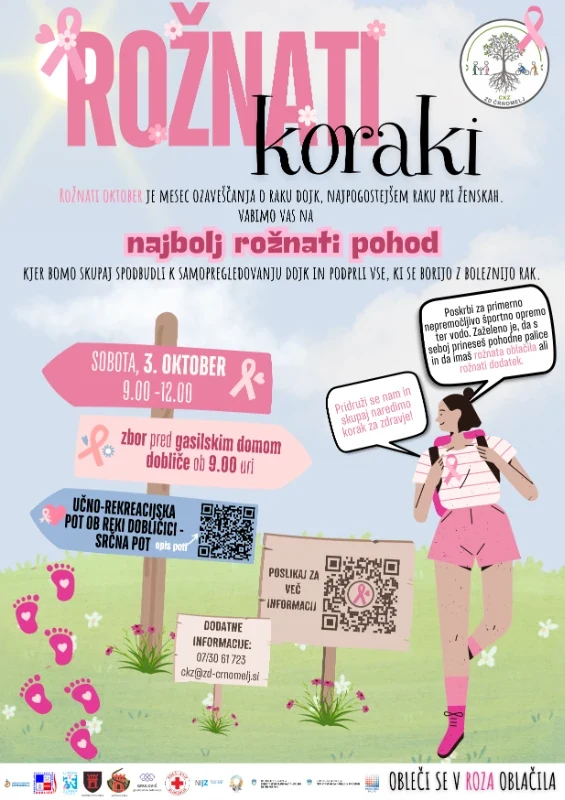
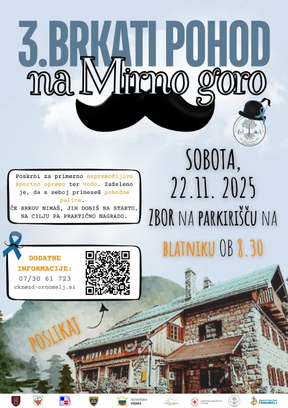
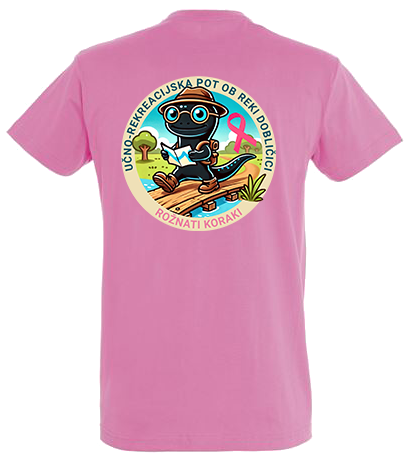
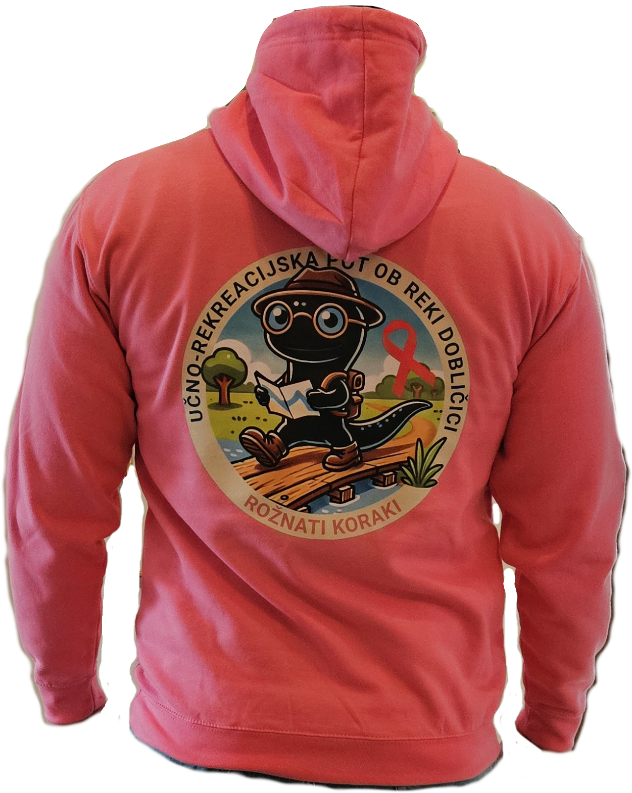
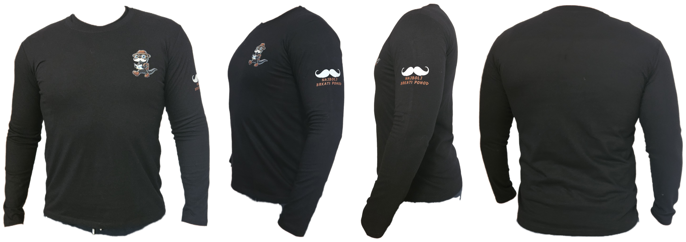

01 / ROŽNATI OKTOBER
Rožnati koraki
Pohod v podporo ženskam, ki se soočajo z rakom dojk, in spodbuda, da skrbi zase namenimo več pozornosti. Rožnata oblačila in dodatki povežejo pohodnike v vidno sporočilo solidarnosti.
Pot in datoteka GPX ↗BELA KRAJINA · SKUPAJ ZA ZDRAVJE
Za zdravje. Za pogum. Drug za drugega.
Po poteh Bele krajine širimo zavedanje o zdravju žensk in moških ter podporo vsem, ki jo potrebujejo.

ROŽNATI OKTOBER ♡
BRKATI NOVEMBER ↗Na potiIz našega arhiva vabil
DVE POTI, SKUPNO POSLANSTVO
Pohoda Centra za krepitev zdravja ZD Črnomelj povezujeta gibanje, druženje in pogovor o zdravju.
Pohod v podporo ženskam, ki se soočajo z rakom dojk, in spodbuda, da skrbi zase namenimo več pozornosti. Rožnata oblačila in dodatki povežejo pohodnike v vidno sporočilo solidarnosti.
Pot in datoteka GPX ↗Novembrski vzpon na Mirno goro odpira pogovor o zdravju moških: o raku prostate in mod ter duševnem zdravju. Brki so simbol podpore, dobra družba pa spremljevalka na poti.
Pot in datoteka GPX ↗POGLEJTE, KAM VODI POT
Raziščite priloženi sledi pohodov in prenesite datoteko GPX za svojo navigacijsko aplikacijo.
SLED IZ DATOTEKE GPX
Sled se vrne do izhodišča. Razdalja je izračunana iz priložene datoteke GPX.
Prenesi GPX ↓Za aktualno zbirno mesto in program preverite napoved posameznega pohoda.
ZEMLJEVID ZA NA POT
Shranite zemljevid obeh pohodov s cestami, stezami in krajevnimi imeni. Pred odhodom prenesite datoteko HTML, nato jo odprite v brskalniku tudi brez povezave.
SE VIDIMO NA NASLEDNJEM?
Ko bodo znani datum, zbirno mesto in program naslednjega pohoda, boste vse informacije našli na tem mestu.
Za informacije pišite organizatorjuNAŠA ZGODBA GRE Z VAMI
Rožnati koraki ali Brkati pohod? Oglejte si oblačila z motivi pohodov.

Povečaj sliko ↗ROŽNATI KORAKI
Rožnata majica s kratkimi rokavi in prepoznavnim motivom Rožnatih korakov. Na fotografiji je prikazan hrbtni del.

Povečaj sliko ↗ROŽNATI KORAKI
Rožnat pulover z velikim motivom na hrbtu. Črna človeška ribica, zemljevid in rožnata pentlja pripovedujejo zgodbo pohoda.

Povečaj sliko ↗BRKATI POHOD
Črna majica z dolgimi rokavi, motivom na prsih ter belimi brki na rokavu. Oglejte si jo z vseh strani.
ODMEVI NAŠIH DRUŽENJ
Zgodbe in fotografski utrinki, povzeti po objavah Radia Odeon. Odprite novico in podoživite pohod.
ZGODBE Z NAŠIH POTI
Pobrskajte po preteklih pohodih, vabilih in zgodbah. Vsako srečanje ima svoj spomin.
VEČ KOT POHOD
Pridite s prijatelji, družino ali sami. S pogovorom in prisotnostjo ustvarjamo prostor za podporo, pogum in povezanost.
Poiščite svojo pot